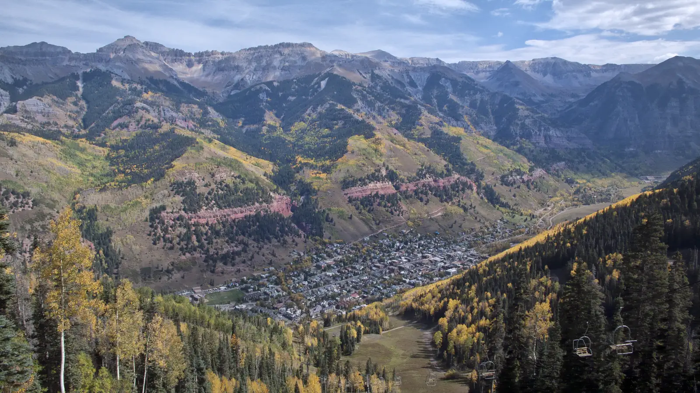

Telluride, Colorado · Ski conditions
Telluride Conditions and Webcams Today
Telluride's webcams and kid facts: nursery from 2 months, group lessons from age 3, a free gondola to the slopes. Montrose airport is 75 to 90 minutes away, the resort says.
Researched with AI (Miles Rowan) · sources linked and dated · How we check
Telluride's own status
Not open yetOpens Thu, Nov 26 (target date) (Telluride's season dates page, read Nov 17).
Our webcam read
No cam read from us yet. Cam reads show here only when a recent one has passed a separate automated accuracy check.

Plan the day with kids
- Season and hours: Telluride targets opening day Thursday, Nov 26, 2026 and closing Apr 4, 2027, weather permitting. Base lifts 9am to 4pm.
- Lessons: Full-day kids' groups: Otters ages 3 to 4 (ski only) and Bears 5 to 6, 9am to 3pm; Eagles 7 to 14, 9am to 3:15pm. Telluride recommends booking ahead.
- Nursery: Childcare from 2 months to 4 years (infants 2 to 11 months, toddlers 1 to 4), 8:30am to 4pm, pick up by 4pm. Reservations required; full days only online.
- Snow camp, ages 5 to 10: Kids Snow Camp, lunch included, checks in at the Children's Ski School in the Gondola building, Mountain Village. Snow boots, not ski boots. Telluride lists both 9am to 3pm and 9am to 4pm; confirm when you book.
- After lessons: Kids Happy Hour, ages 3 to 12, 3:30 to 5pm daily. Kids must be potty trained; book by 9am that day.
- Free gondola: Links Telluride town and Mountain Village, 6:30am to midnight daily, Nov 20, 2026 to Apr 4, 2027.
Lesson, nursery and camp prices on Telluride's pages, read Nov 17:
- Otters lesson and lift ticket, ages 3 to 4: $150 early season, $420 regular season
- Bears lesson and lift ticket, ages 5 to 6: $155 early season, $420 regular season
- Eagles lesson and lift ticket, ages 7 to 14: $155 early season, $345 regular season
- Nursery full day: Infant $350, toddler $340
- Kids Snow Camp full day, ages 5 to 10: $175 early season, $195 regular season
- Kids Happy Hour: $45 per day
- Gondola Parking Garage, overnight: $40 (free 3pm to 2am)
- Silverjack Garage, in town: $2 an hour, $50 overnight
From Telluride's 2026-27 ski school page. Early season is Nov 26 to Dec 17 (no year beside it). The tables don't state a unit (we assume per child, per day; check live); Happy Hour says per day. Nursery prices are regular season. Parking is from the travel page, rates for Nov 26, 2026 to Apr 4, 2027. Read Nov 17, 2026.
Lift tickets and lessons: Telluride's pages we read show lesson prices but no day lift ticket price for adults, so we can't sum a family-of-4 day; check live. See Telluride ski page.
From Telluride ski page, Telluride ski school, Telluride nursery, Telluride travel and Telluride 2026-27 season dates, read Nov 17.
Getting there from Montrose and Telluride airports
- Car: Telluride's travel page gives Montrose airport (MTJ) as a 75-minute drive to Mountain Village, and also as about 65.5 miles and 1 hour 30 minutes. Telluride's own airport (TEX) is 15 minutes; Durango and Grand Junction about 2.5 hours.
- Shuttles: the travel page lists six airport shuttle companies; no fares posted.
- Parking: Carhenge in town is free (no parking 2am to 7am), served by the free Galloping Goose bus. Mountain Village's Heritage Garage is free 4pm to 10pm (7 ft 6 in clearance). The Gondola Parking Garage's daytime rate isn't posted; Silverjack rates are in the price list.
If the snow is thin
- Lift tickets: no refunds for unused tickets because of weather, Telluride's ski page says. No ski school weather policy posted.
- Nursery: free to cancel 72 hours ahead; 50% back inside 72 hours; nothing back on the day.
From Telluride ski page and Telluride ski school, read Nov 17.
Cam by cam
The 4 Telluride cam views our reader uses, in our own descriptive words (see Telluride's own cam page, as listed in our cam feed Nov 17): Base slope, Snow stake, Peak view, High mountain view. Once our reads start, each cam's last read time shows here.
How we read the cams: a program looks at Telluride's public webcam pictures and notes only what a picture can show: fresh snow, snow cover, snowmaking, moving lifts, how busy the base looks, visibility and the snow stake. Each read shows its time; after 90 minutes it is marked older, after 6 hours it is hidden. We never say whether terrain is safe, icy, groomed or open; Telluride's own report decides that. We don't show the cam pictures or count people.
Sources: Telluride webcams · Telluride 2026-27 season dates · Telluride ski school · Telluride nursery · Telluride travel · Telluride ski page (read Nov 17). We haven't skied Telluride.